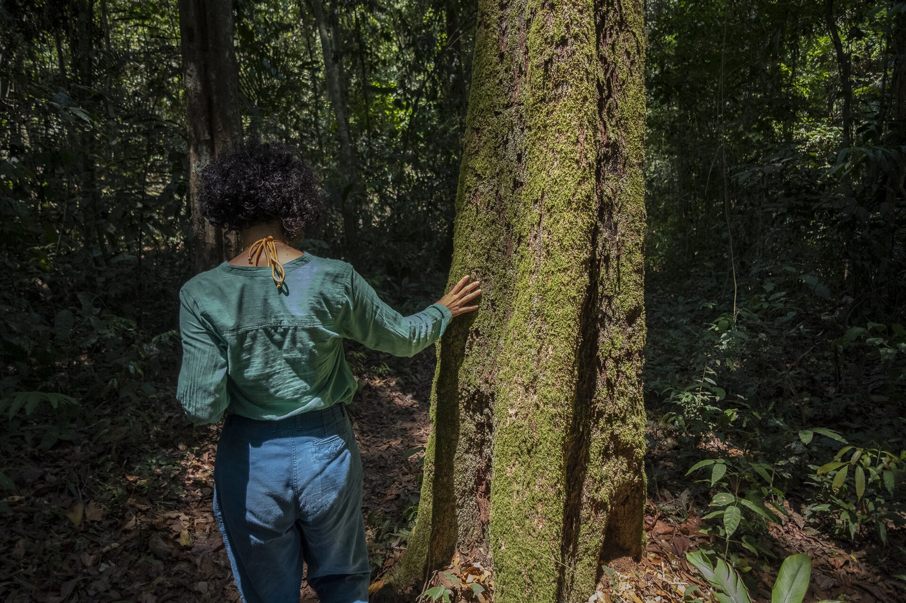
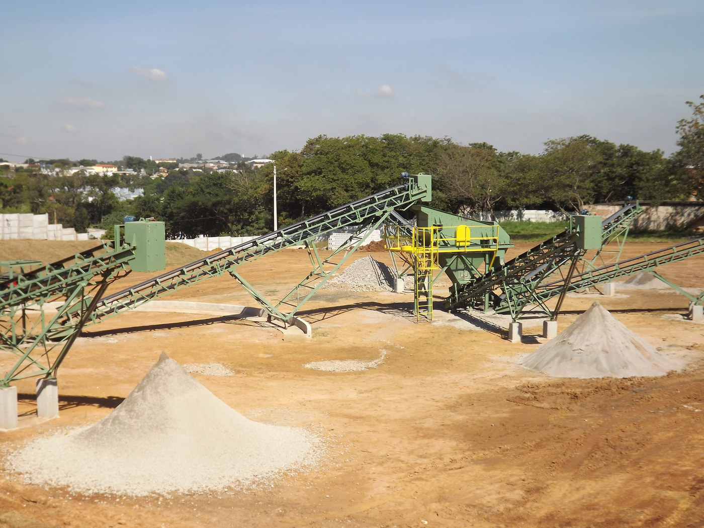

Macrotendências político-pedagógicas
Cenário ilustrativo de aventura 2D em pixel art: céu azul-esverdeado, montanhas ao fundo, rio, árvores e plataformas de terra cobertas por grama. Paisagem fictícia.
Da preocupação com os recursos naturais à formação de um campo crítico e socioambiental.
A Revolução Industrial intensifica produção, consumo e degradação ambiental, despertando preocupação com os recursos naturais.
Na Universidade de Keele, surge o termo Environmental Education, associado à conservação e à ecologia aplicada.
No Brasil, a EA começa como prática pedagógica sob a ditadura; Tbilisi amplia suas dimensões sociais, políticas e éticas.
Redemocratização, movimentos sociais, ONGs e educação popular aproximam ambiente, cidadania e transformação social.
Consolida-se uma EA crítica, também chamada emancipatória, transformadora e popular.
Fonte: SANTOS & TOSCHI (2015), com base em DIAS (2003), LIMA (2009), LOUREIRO (2004) e LAYRARGUES & LIMA (2011).
| Base | Definição |
|---|---|
| Conceitual | Educação aplicada às questões ambientais. Usa a Ecologia, mas não é Ecologia. |
| Política | Forma cidadãos críticos para uma ação transformadora do sistema. |
| Filosófica | Visão contextualizadora que supera a fragmentação do saber. |
| Ideológica | Contra um modelo em que o lucro prevalece sobre a justiça social. Enfatizar a responsabilidade individual desloca a discussão das causas reais. |
Fonte: PELICIONI & PHILIPPI JR. (2014).
Afeto e sensibilização para proteger a natureza: a “pauta verde”.
Resíduos, consumo e ecoeficiência: a “pauta marrom”.
Relações sociais, conflito, cidadania e justiça ambiental.
Tipos ideais que coexistem e disputam a hegemonia: posições ao longo de um eixo, “nunca um esquema binário e maniqueísta”.
Fontes: LAYRARGUES & LIMA (2014); PELICIONI & PHILIPPI JR. (2014); SANTOS & TOSCHI (2015); BOURDIEU (2001, 2004) apud LAYRARGUES & LIMA (2014); LAYRARGUES (1999) apud SOUZA (2018).
A degradação dos ambientes naturais orientou a leitura inicial da crise e a formação da Educação Ambiental brasileira.
Ciências naturais como base. Problemas ambientais entendidos como efeitos corrigíveis da modernização.
Institucionalização prioritária pelo sistema ambiental. Aproximação com a educação se fortalece nos anos 1990.
O período militar de 1964–1985 restringia o debate político e favorecia uma abordagem natural e técnica.
Herança conservacionista: manejo de recursos naturais, informação e comportamentos adequados como resposta à degradação.
Fontes: LAYRARGUES & LIMA (2014); PELICIONI & PHILIPPI JR. (2014); LIMA (2011) apud LAYRARGUES & LIMA (2014).

“conhecer para amar, amar para preservar”
Fontes: LAYRARGUES & LIMA (2014); GUIMARÃES (2004) e LAYRARGUES (2012) apud SANTOS & TOSCHI (2015).
Na proposta de Capra, o conhecimento dos ecossistemas orienta a organização da vida social.
“interdependência, ciclagem, parceria, coevolução, flexibilidade e diversidade”
Compreensão das relações que sustentam a vida.
Transposição desses princípios para uma moralidade aplicável aos sistemas sociais, orientada pelo pensamento sistêmico.
Ressalva dos autores: a mudança cultural depende também das bases econômicas e políticas da sociedade.
Fontes: LAYRARGUES & LIMA (2014); CAPRA (1996) apud LAYRARGUES & LIMA (2014).
Sensibilidade e mudança de valores na relação com a natureza.
Uma tendência histórica consolidada, que se atualiza pela pauta verde.
Pouca articulação com os conflitos sociais.
Centra-se em ações individuais e comportamentais e trata o ser humano como causador genérico da crise, sem recorte social.
Desdobramento: parte dessa linhagem se adapta ao mercado e à tecnologia, formando a pragmática. A conservacionista continua presente.
Sensibilizar é necessário, mas não basta diante dos interesses que ameaçam a natureza.
Fontes: LAYRARGUES & LIMA (2014); PELICIONI & PHILIPPI JR. (2014).
A vertente ganha impulso nos anos 1990, com o consumo de massa e a predominância da lógica do mercado.
Raízes no pós-guerra: consumismo, obsolescência planejada e descartabilidade ampliam a geração de resíduos.
Recuo da regulação estatal. Consumidores e empresas convocados a assumir responsabilidades ambientais.
Adaptação da linhagem conservacionista ao contexto econômico e tecnológico, mantendo o foco no indivíduo e no comportamento.
Presença no campo: Layrargues e Lima descrevem a pragmática como hegemônica em sua análise de 2014.
Fonte: LAYRARGUES & LIMA (2014).

Fonte: LAYRARGUES & LIMA (2014).
Na mídia e nas empresas, o apelo “cada um deve fazer a sua parte” orienta a responsabilidade do consumidor.
Crença na neutralidade da ciência. Pouca análise contextual das causas e consequências dos problemas ambientais.
Resultados imediatos dentro do economicamente viável. A resolução do problema local torna-se atividade-fim.
Limite: mudar condutas sem discutir o modelo de consumo e as relações de poder restringe o enfrentamento político da crise.
Na escola, a coleta seletiva vira atividade-fim quando não discute por que tanto lixo é produzido.
Fontes: LAYRARGUES & LIMA (2014); PELICIONI & PHILIPPI JR. (2014); LAYRARGUES (1999) apud LAYRARGUES & LIMA (2014); LAYRARGUES (2012) apud SANTOS & TOSCHI (2015).
A proposta de substituir a Educação Ambiental pela Educação para o Desenvolvimento Sustentável abre uma disputa sobre a finalidade da educação.
Debate iniciado na Rio-92 e aprofundado após Joanesburgo, em 2002, com a proposta da Década da EDS para 2005–2014.
Ambiguidades e contradições do conceito de desenvolvimento sustentável.
Educação para liberdade e autonomia. Resistência ao esvaziamento dos vínculos com as lutas democráticas.
Críticas à construção impositiva da proposta e à pouca consideração das diferenças entre Norte e Sul.
A troca de nome não é neutra: ela redefine a finalidade da educação.
Fontes: LAYRARGUES & LIMA (2014); CARVALHO (2002), JICKLING (1992) e LIMA (2003) apud LAYRARGUES & LIMA (2014).
No Brasil, a macrotendência crítica consolida-se entre os anos 1980 e 1990 em contraposição às abordagens despolitizadas da crise ambiental.
Se as causas da crise são sociais e políticas, o que a crítica propõe para enfrentá-las?
Fontes: LAYRARGUES & LIMA (2014); SOUZA (2018); CARVALHO (1989) apud LAYRARGUES & LIMA (2014); LEFF (2015) apud SOUZA (2018).
Opção conservadora: conservacionista e pragmática
Mudam só partes isoladas da sociedade, as reformas setoriais, sem questionar a estrutura social como um todo.
Opção crítica: transformação da sociedade
Muda ao mesmo tempo o conhecimento, os valores, as instituições e as relações sociais e políticas, questionando a estrutura social como um todo.
A crise “não expressava problemas da natureza, mas problemas que se manifestavam na natureza”.
Interesses privados avançam sobre o que é de todos: a “invasão da esfera pública pela esfera privada”.
O custo recai sobre a baixa renda, que vive os impactos “com maior intensidade”.
Conceitos-chave: cidadania · democracia · participação · emancipação · conflito · justiça ambiental · transformação social
Mas quem, de fato, produz a crise e quem paga por ela? Os números ajudam a responder.
Fontes: LAYRARGUES & LIMA (2014); PELICIONI & PHILIPPI JR. (2014); ACSELRAD (1992) apud LAYRARGUES & LIMA (2011).
O consumo médio de carbono por pessoa no 1% mais rico foi estimado em aproximadamente 175 vezes o registrado no grupo dos 10% mais pobres.
Ilustra por que é insuficiente tratar todos os indivíduos como igualmente responsáveis pela crise ambiental, omitindo classe, consumo e poder.
Em análise de 2023 (Oxfam/SEI, base 2019), o 1% mais rico respondeu por ~16% das emissões globais de consumo, e os 50% mais pobres, por ~7,7%.
Quem menos emite costuma ser quem mais sofre. Então só a estrutura importa, e o indivíduo não?
Fontes: OXFAM (2015), em parte citada por SOUZA (2018, p. 67); OXFAM & SEI (2023, dados de 2019); LAYRARGUES & LIMA (2014).
Transformar a sociedade não dispensa o indivíduo: a crítica supera separações rígidas e evita os reducionismos, “inclusive os sociologismos e politicismos”.
O sujeito ecológico: articula valores, experiências e subjetividades individuais à política.
Supera a cisão entre indivíduo e coletivo na relação indivíduo-sociedade.
Problematização da realidade: questiona o currículo e contextualiza os conflitos locais.
Prática interdisciplinar ligada à cidadania, a conselhos e a fóruns públicos.
Formar sujeitos capazes de “identificar, problematizar, refletir criticamente e agir” sobre questões socioambientais.
Complexidade e cidadania: as dimensões política e social são fundamentais, mas “não existem separadas da existência dos indivíduos, de seus valores, crenças e subjetividades”.
Essas características valem para toda a crítica. Como elas se expressam em uma corrente específica?
Fontes: LAYRARGUES & LIMA (2014); SOUZA (2018); CARVALHO (2004) e LOUREIRO (2007) apud SANTOS & TOSCHI (2015); BRASIL (2008) apud SOUZA (2018).
Popular, emancipatória ou transformadora: até onde a crítica conseguiu avançar no campo?
Fontes: LAYRARGUES & LIMA (2014); SOUZA (2018); RUIZ (1994), CARVALHO (2000, 2001, 2008), BARBOSA (2002), PERALTA & RUIZ (2010) e MELO (2014) apud SOUZA (2018).
Cresceu, “notadamente no âmbito acadêmico”, e chegou a políticas públicas.
As forças críticas são “constantemente erodidas pelo pragmatismo dominante”: educar vira “meio de ascensão social”.
Fica “quase exclusivamente” na pós-graduação e quase não chega às crianças.
Professores-pesquisadores apontam “a instrumentalização do tema e a ausência de abordagens críticas”.
A PNEA passa a exigir nas escolas mudanças climáticas, biodiversidade e riscos de desastres.
Se a disputa continua, nenhuma vertente venceu. Como as três convivem ao longo do tempo?
Fontes: LAYRARGUES & LIMA (2014); LAYRARGUES (2012) apud SANTOS & TOSCHI (2015); LOUREIRO (2014) apud SOUZA (2018); SILVA & LOUREIRO (2020); BRASIL, Lei nº 14.926/2024.
Fontes: até 2014, LAYRARGUES & LIMA (2014); SOUZA (2018); GUIMARÃES (2004) apud SANTOS & TOSCHI (2015). Após 2014 (leitura nossa): SILVA & LOUREIRO (2020); CAMPOS & CAVALARI (2022); BRASIL, Lei nº 14.926/2024.
Autores e documentos citados indiretamente aparecem como apud. Créditos das fotografias nas respectivas legendas.